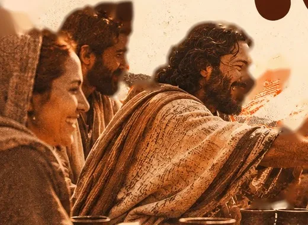
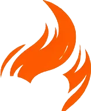
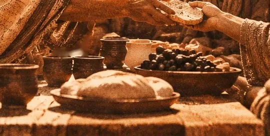
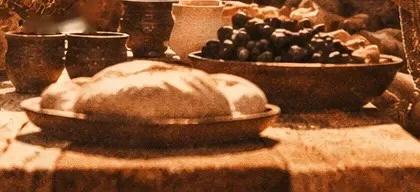
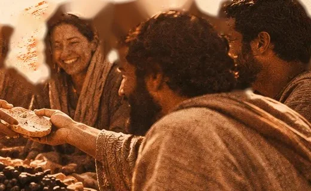
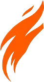

01Adoração
Noites de louvor onde o céu toca a terra e o coração se rende.

Antes de ser um evento, Koinonia é uma mesa. Um lugar onde ninguém chega sozinho e ninguém sai do mesmo jeito.
É o pão partido de mão em mão. É a vida dividida sem máscara. É gente comum vivendo o extraordinário de Deus junto.
E quando a igreja se reúne assim, o *fogo* desce.
“E perseveravam na doutrina dos apóstolos, na comunhão, no partir do pão e nas orações.”
Atos 2:42

Dias para sentar, ouvir, adorar e ser alcançado. Cada momento foi preparado para que você viva a comunhão de verdade.

01Noites de louvor onde o céu toca a terra e o coração se rende.

02Ministrações que alinham a vida ao Reino e acendem um novo tempo.
Momentos de oração e ministração do Espírito. Ninguém sai igual.

04A mesa como lugar de encontro, como faziam os primeiros discípulos.

05Novas amizades, células e uma família para caminhar junto.

Escolha seu ingresso e reserve o seu lugar à mesa. Vagas limitadas para viver tudo de perto.
Vem com a sua célula, igreja ou galera? Reúna 10 pessoas ou mais e fale com a nossa equipe para condições especiais.
Montar minha caravana →Abençoe alguém que sonha em estar na Koinonia, mas não consegue comprar agora. Vocês não precisam se conhecer.
Quero doar →